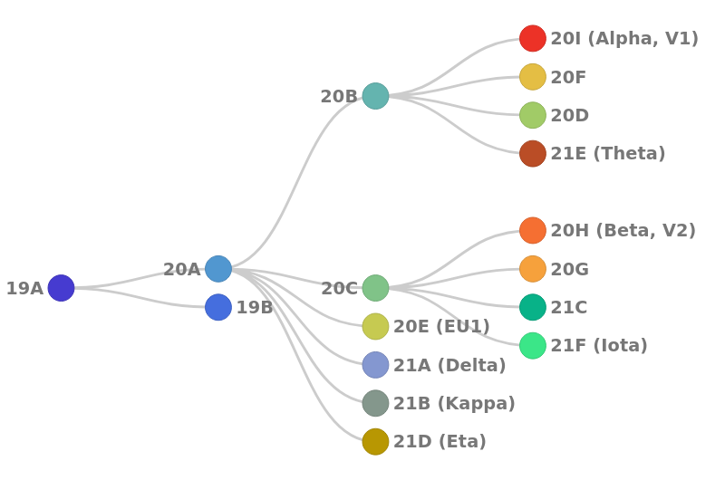

Effectively monitoring global infectious disease crises, such as the COVID-19 pandemic, requires capacity to generate and analyze large volumes of sequencing data in near real time. These data have proven essential for monitoring the emergence and spread of new variants, and for understanding the evolutionary dynamics of the virus.
Two sequencing platforms (Illumina and Oxford Nanopore) in combination with several established library preparation (Ampliconic and metatranscriptomic) strategies are predominantly used to generate SARS-CoV-2 sequence data. However, data alone do not equal knowledge: they need to be analyzed. The Galaxy community has developed high-quality analysis workflows to support
sensitive identification of SARS-CoV-2 allelic variants (AVs) starting with allele frequencies as low as 5% from deep sequencing reads
generation of user-friendly reports for batches of results
reliable and configurable consensus genome generation from called variants
More information about the workflows, including benchmarking, can be found
Any analysis should get its own Galaxy history. So let’s start by creating a new one:
Hands-on: Prepare the Galaxy history
Create a new history for this analysis
Click the new-history icon at the top of the history panel.
If the new-history is missing:
Click on the galaxy-gear icon (History options) on the top of the history panel
Select the option Create New from the menu
Rename the history
Click on galaxy-pencil (Edit) next to the history name (which by default is “Unnamed history”)
Type the new name
Click on Save
If you do not have the galaxy-pencil (Edit) next to the history name:
Click on Unnamed history (or the current name of the history) (Click to rename history) at the top of your history panel
Type the new name
Press Enter
Get sequencing data
Before we can begin any Galaxy analysis, we need to upload the input data: FASTQ files with the sequenced viral RNA from different patients infected with SARS-CoV-2. Several types of data are possible:
Single-end data derived from Illumina-based RNAseq experiments
Paired-end data derived from Illumina-based RNAseq experiments
Paired-end data generated with Illumina-based Ampliconic (ARTIC) protocols
ONT FASTQ files generated with Oxford nanopore (ONT)-based Ampliconic (ARTIC) protocols
We encourage you to use your own data here (with at least 2 samples). If you do not have any datasets available, we provide some example datasets (paired-end data generated with Illumina-based Ampliconic (ARTIC) protocols) from COG-UK, the COVID-19 Genomics UK Consortium.
There are several possibilities to upload the data depending on how many datasets you have and what their origin is:
Import datasets
from your local file system,
from a given URL or
from a shared data library on the Galaxy server you are working on
and organize the imported data as a dataset collection.
Comment: Collections
A dataset collection is a way to represent an arbitrarily large collection of samples as a singular entity within a user’s workspace. For an in-depth introduction to the concept you can follow this dedicated tutorial.
Option 1 video: Your own local data using Upload Data (recommended for 1-10 datasets).
Click on Upload Data on the top of the left panel
Click on Choose local file and select the files or drop the files in the Drop files here part
Click on Start
Click on Close
Option 2 video: Your own local data using FTP (recommended for >10 datasets)
Make sure to have an FTP client installed
There are many options. We can recommend FileZilla, a free FTP client that is available on Windows, MacOS, and Linux.
Establish FTP connection to the Galaxy server
Provide the Galaxy server’s FTP server name (e.g. usegalaxy.org, ftp.usegalaxy.eu)
Provide the username (usually the email address) and the password on the Galaxy server
Connect
Add the files to the FTP server by dragging/dropping them or right clicking on them and uploading them
The FTP transfer will start. We need to wait until they are done.
Open the Upload menu on the Galaxy server
Click on Choose FTP file on the bottom
Select files to import into the history
Click on Start
Option 3: From the shared data library
As an alternative to uploading the data from a URL or your computer, the files may also have been made available from a shared data library:
Go into Shared data (top panel) then Data libraries
Navigate to
GTN - Material / Variant analysis / Mutation calling, viral genome reconstruction and lineage/clade assignment from SARS-CoV-2 sequencing data / DOI: 10.5281/zenodo.5036686 or the correct folder as indicated by your instructor
Select the desired files
Click on the To History button near the top and select as Datasets from the dropdown menu
In the pop-up window, select the history you want to import the files to (or create a new one)
Click on Import
Option 4: From an external server via URL
Copy the link location
Open the Galaxy Upload Manager (galaxy-upload on the top-right of the tool panel)
Select Paste/Fetch Data
Paste the link into the text field
Press Start
Close the window
For our example datasets, the datasets are stored on Zenodo and can be retrieved using the following URLs:
Click on galaxy-selectorSelect Items at the top of the history panel
Check all the datasets in your history you would like to include
Click n of N selected and choose Build List of Dataset Pairs
Change the text of unpaired forward to a common selector for the forward reads
Change the text of unpaired reverse to a common selector for the reverse reads
Click Pair these datasets for each valid forward and reverse pair.
Enter a name for your collection
Click Create List to build your collection
Click on the checkmark icon at the top of your history again
For the example datasets:
Since the datasets carry _1 and _2 in their names, Galaxy may already have detected a possible pairing scheme for the data, in which case the datasets will appear in green in the lower half (the paired section) of the dialog.
You could accept this default pairing, but as shown in the middle column of the paired section, this would include the .fastqsanger suffix in the pair names (even with Remove file extensions? checked Galaxy would only remove the last suffix, .gz, from the dataset names.
It is better to undo the default pairing and specify exactly what we want:
at the top of the paired section: click Unpair all
This will move all input datasets into the unpaired section in the upper half of the dialog.
set the text of unpaired forward to: _1.fastqsanger.gz
set the text of unpaired reverse to: _2.fastqsanger.gz
click: Auto-pair
All datasets should be moved to the paired section again, but the middle column should now show that only the sample accession numbers will be used as the pair names.
Make sure Hide original elements is checked to obtain a cleaned-up history after building the collection.
Click Create Collection
Comment: Learning to build collections automatically
Besides the sequenced reads data, we need at least two additional datasets for calling variants and annotating them:
the SARS-CoV-2 reference sequence NC_045512.2 to align and compare our sequencing data against
a tabular dataset defining aliases for viral gene product names, which will let us translate NCBI RefSeq Protein identifiers (used by the SnpEff annotation tool) to the commonly used names of coronavirus proteins and cleavage products.
Another two datasets are needed only for the analysis of ampliconic, e.g. ARTIC-amplified, input data:
a BED file specifying the primers used during amplification and their binding sites on the viral genome
a custom tabular file describing the amplicon grouping of the primers
Hands-on: Import auxiliary datasets
Import the auxiliary datasets:
the SARS-CoV-2 reference (NC_045512.2_reference.fasta)
gene product name aliases (NC_045512.2_feature_mapping.tsv)
ARTIC v3 primer scheme (ARTIC_nCoV-2019_v3.bed)
ARTIC v3 primer amplicon grouping info (ARTIC_amplicon_info_v3.tsv)
The instructions here assume you will be analyzing the example samples
suggested above, which have been amplified using version 3 of the ARTIC
network’s SARS-CoV-2 primer set. If you have decided to work through
this tutorial using your own samples of interest, and if those samples
have been amplified with a different primer set, you will have to upload
your own datasets with primer and amplicon information at this point.
If the primer set is from the ARTIC network, just not version 3, you
should be able to obtain the primer BED file from
their SARS-CoV-2 github repo.
Look for a 6-column BED file structured like the version 3 one we suggest below.
For the tabular amplicon info file, you only need to combine all primer names from
the BED file that contribute to the same amplicon on a single tab-separated line.
The result should look similar to the ARTIC v3 amplicon grouping info file we
suggest to upload.
Several options exist to import these datasets:
Option 1: From the shared data library
As an alternative to uploading the data from a URL or your computer, the files may also have been made available from a shared data library:
Go into Shared data (top panel) then Data libraries
Navigate to
GTN - Material / Variant analysis / Mutation calling, viral genome reconstruction and lineage/clade assignment from SARS-CoV-2 sequencing data / DOI: 10.5281/zenodo.5036686 or the correct folder as indicated by your instructor
Select the desired files
Click on the To History button near the top and select as Datasets from the dropdown menu
In the pop-up window, select the history you want to import the files to (or create a new one)
Click on the new-historyImport history button on the top right
Enter a title for the new history
Click on Import
For the example datasets, you will need to import all 4 auxiliary datasets.
Check and manually correct assigned datatypes
If you have imported the auxiliary datasets via their Zenodo links, Galaxy
will have tried to autodetect the format of each imported dataset, but
will not always be right with its guess. It’s your task now to check and
possibly correct the format assignments for each of the datasets!
Expand the view of each of the uploaded auxiliary datasets and see if
Galaxy shows the following format values:
for NC_045512.2_reference.fasta: fasta
for NC_045512.2_feature_mapping.tabular: tabular
for ARTIC_nCoV-2019_v3.bed6: bed6 or bed
for ARTIC_amplicon_info_v3.tabular: tabular
If any of the above assignments are not what they should be, then change
the datatype of the corresponding dataset now to the intended format.
Click on the galaxy-pencilpencil icon for the dataset to edit its attributes
In the central panel, click on the galaxy-gearConvert tab on the top
In the lower part galaxy-chart-select-dataDatatypes, select your desired datatype
tip: you can start typing the datatype into the field to filter the dropdown menu
Click the Save button
If you have imported the auxiliary datasets into your history from a
shared data library or history, then the above steps are not necessary
(though checking the datatypes of imported data is good practice in
general) because the shared datasets have their format configured
correctly already.
From FASTQ to annotated allelic variants
To identify the SARS-CoV-2 allelic variants (AVs), a first workflow converts the FASTQ files to annotated AVs through a series of steps that include quality control, trimming, mapping, deduplication, AV calling, and filtering.
Four versions of this workflow are available with their tools and parameters optimized for different types of input data as outlined in the following table:
The two Illumina RNASeq workflows (Illumina RNAseq SE and Illumina RNAseq PE) perform read mapping with bwa-mem and bowtie2, respectively, followed by sensitive allelic-variant (AV) calling across a wide range of AFs with lofreq.
The workflow for Illumina-based ARTIC data (Illumina ARTIC) builds on the RNASeq workflow for paired-end data using the same steps for mapping (bwa-mem) and AV calling (lofreq), but adds extra logic operators for trimming ARTIC primer sequences off reads with the ivar package. In addition, this workflow uses ivar also to identify amplicons affected by ARTIC primer-binding site mutations and excludes reads derived from such “tainted” amplicons when calculating alternative allele frequences (AFs) of other AVs.
The workflow for ONT-sequenced ARTIC data (ONT ARTIC) is modeled after the alignment/AV-calling steps of the ARTIC pipeline. It performs, essentially, the same steps as that pipeline’s minion command, i.e. read mapping with minimap2 and AV calling with medaka. Like the Illumina ARTIC workflow it uses ivar for primer trimming. Since ONT-sequenced reads have a much higher error rate than Illumina-sequenced reads and are therefore plagued more by false-positive AV calls, this workflow makes no attempt to handle amplicons affected by potential primer-binding site mutations.
All four workflows use SnpEff, specifically its 4.5covid19 version, for AV annotation.
Workflows default to requiring an AF ≥ 0.05 and AV-supporting reads of ≥ 10 (these and all other parameters can be easily changed by the user). For an AV to be listed in the reports, it must surpass these thresholds in at least one sample of the respective dataset. We estimate that for AV calls with an AF ≥ 0.05, our analyses have a false-positive rate of < 15% for both Illumina RNAseq and Illumina ARTIC data, while the true-positive rate of calling such low-frequency AVs is ~80% and approaches 100% for AVs with an AF ≥ 0.15. This estimate is based on an initial application of the Illumina RNAseq and Illumina ARTIC workflows to two samples for which data of both types had been obtained at the virology department of the University of Freiburg and the assumption that AVs supported by both sets of sequencing data are true AVs. The second threshold of 10 AV-supporting reads is applied to ensure that calculated AFs are sufficiently precise for all AVs.
More details about the workflows, including benchmarking of the tools, can be found on covid19.galaxyproject.org
Click on Workflow on the top menu bar of Galaxy. You will see a list of all your workflows.
Click on the upload icon galaxy-upload at the top-right of the screen
Provide your workflow
Option 1: Paste the URL of the workflow into the box labelled “Archived Workflow URL”
Option 2: Upload the workflow file in the box labelled “Archived Workflow File”
Click the Import workflow button
Run COVID-19: variation analysis on …workflow using the following parameters:
Click on Workflow on the top menu bar of Galaxy. You will see a list of all your workflows.
Click on the workflow-run (Run workflow) button next to your workflow
Configure the workflow as needed
Click the Run Workflow button at the top-right of the screen
You may have to refresh your history to see the queued jobs
“Send results to a new history”: No
For Illumina ARTIC PE workflow (named COVID-19: variation analysis on ARTIC PE data), to use for example datasets
param-file“1: ARTIC primers to amplicon assignments”: ARTIC_amplicon_info_v3.tsv or ARTIC amplicon info v3
param-file“2: ARTIC primer BED”: ARTIC_nCoV-2019_v3.bed or ARTIC nCoV-2019 v3
param-file“3: FASTA sequence of SARS-CoV-2”: NC_045512.2_reference.fasta or NC_045512.2 reference sequence
param-collection“4: Paired Collection (fastqsanger) - A paired collection of fastq datasets to call variant from”: paired collection created for the input datasets
For Illumina RNAseq PE workflow (named COVID-19: variation analysis on WGS PE data)
param-collection“1: Paired Collection (fastqsanger)”: paired collection created for the input datasets
param-file“2: NC_045512.2 FASTA sequence of SARS-CoV-2”: NC_045512.2_reference.fasta or NC_045512.2 reference sequence
For Illumina RNAseq SE workflow (named COVID-19: variation analysis on WGS SE data)
param-collection“1: Input dataset collection”: dataset collection created for the input datasets
param-file“2: NC_045512.2 FASTA sequence of SARS-CoV-2”: NC_045512.2_reference.fasta or NC_045512.2 reference sequence
For ONT ARTIC workflow (named COVID-19: variation analysis of ARTIC ONT data)
param-file“1: ARTIC primer BED”: ARTIC_nCoV-2019_v3.bed or ARTIC nCoV-2019 v3
param-file“2: FASTA sequence of SARS-CoV-2”: NC_045512.2_reference.fasta or NC_045512.2 reference sequence
param-collection“3: Collection of ONT-sequenced reads”: dataset collection created for the input datasets
The execution of the workflow takes some time. It is possible to launch the next step even if it is not done, as long as all steps are successfully scheduled.
From annotated AVs per sample to AV summary
Once the jobs of previous workflows are done, we identified AVs for each sample. We can run a “Reporting workflow” on them to generate a final AV summary.
This workflow takes the collection of called (with lofreq) and annotated (with SnpEff) variants (one VCF dataset per input sample) that got generated as one of the outputs of any of the four variation analysis workflows above, and generates two tabular reports and an overview plot summarizing all the variant information for your batch of samples.
Warning: Use the right collection of annotated variants!
The variation analysis workflow should have generated two collections of annotated variants - one called Final (SnpEff-) annotated variants, the other one called Final (SnpEff-) annotated variants with strand-bias soft filter applied.
If you have analyzed ampliconic data with any of the variation analysis of ARTIC data workflows, then please consider the strand-bias soft-filtered collection experimental and proceed with the Final (SnpEff-) annotated variants collection as input to the next workflow.
If you are working with WGS data using either the variation analysis on WGS PE data or the variation analysis on WGS SE data workflow, then (and only then) you should continue with the Final (SnpEff-) annotated variants with strand-bias soft filter applied collection to eliminate some likely false-postive variant calls.
Hands-on: From annotated AVs per sample to AV summary
Click on Workflow on the top menu bar of Galaxy. You will see a list of all your workflows.
Click on the upload icon galaxy-upload at the top-right of the screen
Provide your workflow
Option 1: Paste the URL of the workflow into the box labelled “Archived Workflow URL”
Option 2: Upload the workflow file in the box labelled “Archived Workflow File”
Click the Import workflow button
Run COVID-19: variation analysis reportingworkflow using the following parameters:
Click on Workflow on the top menu bar of Galaxy. You will see a list of all your workflows.
Click on the workflow-run (Run workflow) button next to your workflow
Configure the workflow as needed
Click the Run Workflow button at the top-right of the screen
You may have to refresh your history to see the queued jobs
“Send results to a new history”: No
“1: AF Filter - Allele Frequency Filter”: 0.05
This number is the minimum allele frequency required for variants to be included in the report.
“2: DP Filer”: 1
The minimum depth of all alignments required at a variant site;
the suggested value will, effectively, deactivate filtering on overall DP and will result in the DP_ALT Filter to be used as the only coverage-based filter.
“3: DP_ALT Filter”: 10
The minimum depth of alignments at a site that need to support the respective variant allele
“4: Variation data to report”: Final (SnpEff-) annotated variants
The collection with variation data in VCF format: the output of the previous workflow
“4: gene products translations”: NC_045512.2_feature_mapping.tsv or NC_045512.2 feature mapping
The custom tabular file mapping NCBI RefSeq Protein identifiers (as used by snpEff version 4.5covid19) to their commonly used names, part of the auxillary data; the names in the second column of this dataset are the ones that will appear in the reports generated by this workflow.
“5: Number of Clusters”: 3
The variant frequency plot generated by the workflow will separate the samples into this number of clusters.
The three key results datasets produced by the Reporting workflow are:
Combined Variant Report by Sample: This table combines the key statistics for each AV call in each sample. Each line in the dataset represents one AV detected in one specific sample
Strand bias P-value from Fisher’s exact test calculated by lofreq
9
DP4
Depth for Forward Ref Counts, Reverse Ref Counts, Forward Alt Counts, Reverse Alt Counts
10
IMPACT
Functional impact (from SNPEff)
11
FUNCLASS
Funclass for change (from SNPEff)
12
EFFECT
Effect of change (from SNPEff)
13
GENE
Gene name
14
CODON
Codon
15
AA
Amino acid
16
TRID
Short name for the gene
17
min(AF)
Minimum Alternative Allele Freq across all samples containing this change
18
max(AF)
Maximum Alternative Allele Freq across all samples containing this change
19
countunique(change)
Number of distinct types of changes at this site across all samples
20
countunique(FUNCLASS)
Number of distinct FUNCLASS values at this site across all samples
21
change
Change at this site in this sample
Question
How many AVs are found for all samples?
How many AVs are found for the first sample in the document?
How many AVs are found for each sample?
By expanding the dataset in the history, we have the number of lines in the file. 868 lines for the example datasets. The first line is the header of the table. Then 867 AVs.
We can filter the table to get only the AVs for the first sample Filter data on any column using simple expressionsTool: Filter1 with the following parameters:
param-file“Filter”: Combined Variant Report by Sample
“With following condition”: c1=='ERR5931005' (to adapt with the sample name)
“Number of header lines to skip”: 1
We got then only the AVs for the selected sample (48 for ERR5931005).
To get the number of AVs for each sample, we can run Group dataTool: Grouping1 with the following parameters:
param-file“Select data”: Combined Variant Report by Sample
“Group by column”: Column: 1
In “Operation”:
In “1: Operation”:
“Type”: Count
“On column”: Column: 2
With our example datasets, it seems that samples have between 42 and 56 AVs.
Combined Variant Report by Variant: This table combines the information about each AV across samples.
Short name for the gene (from the feature mapping dataset)
11
countunique(Sample)
Number of distinct samples containing this change
12
min(AF)
Minimum Alternative Allele Freq across all samples containing this change
13
max(AF)
Maximum Alternative Allele Freq across all samples containing this change
14
SAMPLES(above-thresholds)
List of distinct samples where this change has frequency abobe threshold (5%)
15
SAMPLES(all)
List of distinct samples containing this change at any frequency (including below threshold)
16
AFs(all)
List of all allele frequencies across all samples
17
change
Change
Question
How many AVs are found?
What are the different impacts of the AVs?
How many variants are found for each impact?
What are the different effects of HIGH impact?
Are there any AVs impacting all samples?
By expanding the dataset in the history, we have the number of lines in the file. 184 lines for the example datasets. The first line is the header of the table. Then 183 AVs.
The different impacts of the AVs are HIGH, MODERATE and LOW.
To get the number of AVs for each impact levels, we can run Group dataTool: Grouping1 with the following parameters:
param-file“Select data”: Combined Variant Report by Variant
“Group by column”: Column: 4
In “Operation”:
In “1: Operation”:
“Type”: Count
“On column”: Column: 1
With our example datasets, we find:
11 AVs with no predicted impact
52 LOW AVs
111 MODERATE AVs
9 HIGH AVs
We can filter the table to get only the AVs with HIGH impact by running Filter data on any column using simple expressionsTool: Filter1 with the following parameters:
param-file“Filter”: Combined Variant Report by Variant
“With following condition”: c4=='HIGH'
“Number of header lines to skip”: 1
The different effects for the 9 HIGH AVs are STOP_GAINED and FRAME_SHIFT.
We can filter the table to get the AVs for which countunique(Sample) is equal the number of samples (18 in our example dataset): Filter data on any column using simple expressionsTool: Filter1 with the following parameters:
param-file“Filter”: Combined Variant Report by Variant
“With following condition”: c11==18 (to adapt to the number of sample)
“Number of header lines to skip”: 1
For our example datasets, 4 AVs are found in all samples
Variant frequency plot
This plot represents AFs (cell color) for the different AVs (columns) and the different samples (rows). The AVs are grouped by genes (different colors on the 1st row). Information about their effect is also represented on the 2nd row. The samples are clustered following the tree displayed on the left.
In the example datasets, the samples are clustered in 3 clusters (as we defined when running the workflow), that may represent different SARS-CoV-2 lineages as the AVs profiles are different.
From AVs to consensus sequences
For the variant calls, we can now run a workflow which generates reliable consensus sequences according to transparent criteria that capture at least some of the complexity of variant calling:
Each consensus sequence is guaranteed to capture all called, filter-passing variants as defined in the VCF of its sample that reach a user-defined consensus allele frequency threshold.
Filter-failing variants and variants below a second user-defined minimal allele frequency threshold are ignored.
Genomic positions of filter-passing variants with an allele frequency in between the two thresholds are hard-masked (with N) in the consensus sequence of their sample.
Genomic positions with a coverage (calculated from the read alignments input) below another user-defined threshold are hard-masked, too, unless they are consensus variant sites.
The workflow takes a collection of VCFs and a collection of the corresponding aligned reads (for the purpose of calculating genome-wide coverage) such as produced by the first workflow we ran.
Warning: Use the right collections as input!
The variation analysis workflow should have generated two collections of annotated variants - one called Final (SnpEff-) annotated variants, the other one called Final (SnpEff-) annotated variants with strand-bias soft filter applied.
If you have analyzed ampliconic data with any of the variation analysis of ARTIC data workflows, then please consider the strand-bias soft-filtered collection experimental and proceed with the Final (SnpEff-) annotated variants collection as input to the next workflow.
If you are working with WGS data using either the variation analysis on WGS PE data or the variation analysis on WGS SE data workflow, then (and only then) you should continue with the Final (SnpEff-) annotated variants with strand-bias soft filter applied collection to eliminate some likely false-postive variant calls.
As for the collection of aligned reads, you should choose the collection of BAM datasets that was used for variant calling (specifically for the first round of variant calling in the case of Illumina ampliconic data). This collection should be called Fully processed reads for variant calling (primer-trimmed, realigned reads with added indelquals), if it was generated by any of the Illumina variation analysis workflows, or BamLeftAlign on collection ..., if it was produced by the ONT variation analysis workflow.
Click on Workflow on the top menu bar of Galaxy. You will see a list of all your workflows.
Click on the upload icon galaxy-upload at the top-right of the screen
Provide your workflow
Option 1: Paste the URL of the workflow into the box labelled “Archived Workflow URL”
Option 2: Upload the workflow file in the box labelled “Archived Workflow File”
Click the Import workflow button
Run COVID-19: consensus constructionworkflow using the following parameters:
Click on Workflow on the top menu bar of Galaxy. You will see a list of all your workflows.
Click on the workflow-run (Run workflow) button next to your workflow
Configure the workflow as needed
Click the Run Workflow button at the top-right of the screen
You may have to refresh your history to see the queued jobs
“Send results to a new history”: No
“1: Variant calls”: Final (SnpEff-) annotated variants
The collection with variation data in VCF format: the output of the first workflow
“2: min-AF for consensus variants: 0.7
Only variant calls with an AF greater than this value will be considered consensus variants.
“3: min-AF for failed variants”: 0.25
Variant calls with an AF higher than this value, but lower than the AF threshold for consensus variants will be considered questionable and the respective sites be masked (with Ns) in the consensus sequence. Variants with an AF below this threshold will be ignored.
“4: aligned reads data for depth calculation”: Fully processed reads for variant calling
Collection with fully processed BAMs generated by the first workflow.
For ARTIC data, the BAMs should NOT have undergone processing with ivar removereads
“5: Depth-threshold for masking”: 5
Sites in the viral genome covered by less than this number of reads detection of variants is considered to become unreliable. Such sites will be masked (with Ns) in the consensus sequence unless there is a consensus variant call at the site.
“6: Reference genome”: NC_045512.2_reference.fasta or NC_045512.2 reference sequence
SARS-CoV-2 reference genome, part of the auxillary data.
The main outputs of the workflow are:
A collection of viral consensus sequences.
A multisample FASTA of all these sequences.
The last one can be used as input for tools like Pangolin or Nextclade.
From consensus sequences to clade/lineage assignments
To assign lineages to the different samples from their consensus sequences, two tools are available: Pangolin and Nextclade.
With Pangolin
Pangolin (Phylogenetic Assignment of Named Global Outbreak LINeages) can be used to assign a SARS-CoV-2 genome sequence the most likely lineage based on the PANGO nomenclature system.
Hands-on: From consensus sequences to clade assignations using Pangolin
PangolinTool: toolshed.g2.bx.psu.edu/repos/iuc/pangolin/pangolin/3.1.4+galaxy0 with the following parameters:
param-file“Input FASTA File(s)”: Multisample consensus FASTA
Inspect the generated output
Pangolin generates a table file with taxon name and lineage assigned. Each line corresponds to each sample in the input consensus FASTA file provided. The columns are:
Column
Field
Meaning
1
taxon
The name of an input query sequence, here the sample name.
2
lineage
The most likely lineage assigned to a given sequence based on the inference engine used and the SARS-CoV-2 diversity designated. This assignment may be is sensitive to missing data at key sites. Lineage Description List
3
conflict
In the pangoLEARN decision tree model, a given sequence gets assigned to the most likely category based on known diversity. If a sequence can fit into more than one category, the conflict score will be greater than 0 and reflect the number of categories the sequence could fit into. If the conflict score is 0, this means that within the current decision tree there is only one category that the sequence could be assigned to.
4
ambiguity_score
This score is a function of the quantity of missing data in a sequence. It represents the proportion of relevant sites in a sequence which were imputed to the reference values. A score of 1 indicates that no sites were imputed, while a score of 0 indicates that more sites were imputed than were not imputed. This score only includes sites which are used by the decision tree to classify a sequence.
5
scorpio_call
If a query is assigned a constellation by scorpio this call is output in this column. The full set of constellations searched by default can be found at the constellations repository.
6
scorpio_support
The support score is the proportion of defining variants which have the alternative allele in the sequence.
7
scorpio_conflict
The conflict score is the proportion of defining variants which have the reference allele in the sequence. Ambiguous/other non-ref/alt bases at each of the variant positions contribute only to the denominators of these scores.
8
version
A version number that represents both the pango-designation number and the inference engine used to assign the lineage.
9
pangolin_version
The version of pangolin software running.
10
pangoLEARN_version
The dated version of the pangoLEARN model installed.
11
pango_version
The version of pango-designation lineages that this assignment is based on.
12
status
Indicates whether the sequence passed the QC thresholds for minimum length and maximum N content.
13
note
If any conflicts from the decision tree, this field will output the alternative assignments. If the sequence failed QC this field will describe why. If the sequence met the SNP thresholds for scorpio to call a constellation, it’ll describe the exact SNP counts of Alt, Ref and Amb (Alternative, Reference and Ambiguous) alleles for that call.
Question
How many different lineages have been found? How many samples for each lineage?
To summarize the number of lineages and number of samples for each lineage, we can run Group dataTool: Grouping1 with the following parameters:
param-file“Select data”: output of pangolin
“Group by column”: Column: 2
In “Operation”:
In “1: Operation”:
“Type”: Count
“On column”: Column: 1
For our example datasets, we obtain then:
13 samples B.1.1.7 / Alpha (B.1.1.7-like)
3 samples B.1.617.2 / Delta (B.1.617.2-like)
1 sample B.1.525
1 sample P.1
With Nextclade
Nextclade assigns clades, calls mutations and performs sequence quality checks on SARS-CoV-2 genomes.
Hands-on: From consensus sequences to clade assignations using Nextclade
NextcladeTool: toolshed.g2.bx.psu.edu/repos/iuc/nextclade/nextclade/0.14.4+galaxy0 with the following parameters:
param-file“SARS-CoV-2 consensus sequences (FASTA)”: Multisample consensus FASTA
param-check“Output options”: Tabular format report
Inspect the generated output
Column
Field
Meaning
1
seqName
Name of the sequence in the source data, here the sample name
2
clade
The result of the clade assignment of a sequence, as defined by Nextstrain. Currently known clades are depicted in the schema below
3
qc.overallScore
Overall QC score
4
qc.overallStatus
Overall QC status
5
totalGaps
Number of - characters (gaps)
6
totalInsertions
Total length of insertions
7
totalMissing
Number of N characters (missing data)
8
totalMutations
Number of mutations. Mutations are called relative to the reference sequence Wuhan-Hu-1
9
totalNonACGTNs
Number of non-ACGTN characters
10
totalPcrPrimerChanges
Total number of mutations affecting user-specified PCR primer binding sites
11
substitutions
List of mutations
12
deletions
List of deletions (positions are 1-based)
13
insertions
Insertions relative to the reference Wuhan-Hu-1 (positions are 1-based)
14
missing
Intervals consisting of N characters
15
nonACGTNs
List of positions of non-ACGTN characters (for example ambiguous nucleotide codes)
16
pcrPrimerChanges
Number of user-specified PCR primer binding sites affected by mutations
17
aaSubstitutions
List of aminoacid changes
18
totalAminoacidSubstitutions
Number of aminoacid changes
19
aaDeletions
List of aminoacid deletions
20
totalAminoacidDeletions
Number of aminoacid deletions
21
alignmentEnd
Position of end of alignment
22
alignmentScore
Alignment score
23
alignmentStart
Position of beginning of alignment
24
qc.missingData.missingDataThreshold
Threshold for flagging sequences based on number of sites with Ns
25
qc.missingData.score
Score for missing data
26
qc.missingData.status
Status on missing data
27
qc.missingData.totalMissing
Number of sites with Ns
28
qc.mixedSites.mixedSitesThreshold
Threshold for flagging sequences based on number of mutations relative to the reference sequence
29
qc.mixedSites.score
Score for high divergence
30
qc.mixedSites.status
Status for high divergence
31
qc.mixedSites.totalMixedSites
Number of sites with mutations
32
qc.privateMutations.cutoff
Threshold for the number of non-ACGTN characters for flagging sequences
33
qc.privateMutations.excess
Number of ambiguous nucleotides above the threshold
34
qc.privateMutations.score
Score for ambiguous nucleotides
35
qc.privateMutations.status
Status for ambiguous nucleotides
36
qc.privateMutations.total
Number of ambiguous nucleotides
37
qc.snpClusters.clusteredSNPs
Clusters with 6 or more differences in 100 bases
38
qc.snpClusters.score
Score for clustered differences
39
qc.snpClusters.status
Status for clustered differences
40
qc.snpClusters.totalSNPs
Number of differences in clusters
41
errors
Other errors (e.g. sequences in which some of the major genes fail to translate because of frame shifting insertions or deletions)
Question
How many different lineages have been found? How many samples for each lineage?
Figure 1: Illustration of phylogenetic relationship of clades, as used in Nextclade (Source: Nextclade)
To summarize the number of lineages and number of samples for each lineage, we can run Group dataTool: Grouping1 with the following parameters:
param-file“Select data”: output of Nextclade
“Group by column”: Column: 2
In “Operation”:
In “1: Operation”:
“Type”: Count
“On column”: Column: 1
For our example datasets, we obtain then:
10 samples 20I (Alpha, V1)
4 samples 20B (ancestor of 20I)
3 samples 21A (Delta)
1 sample 21D (Eta)
Comparison between Pangolin and Nextclade clade assignments
We can compare Pangolin and Nextclade clade assignments by extracting interesting columns and joining them into a single dataset using sample ids.
Hands-on: Comparison clade assignations
Cut columns from a tableTool: Cut1 with the following parameters:
“Cut columns”: c1,c2
“Delimited by”: Tab
param-file“From”: output of Nextclade
Cut columns from a tableTool: Cut1 with the following parameters:
“Cut columns”: c1,c2,c5
“Delimited by”: Tab
param-file“From”: output of Pangolin
Join two DatasetsTool: join1
param-file“Join”: output of first cut
“using column”: Column: 1
param-file“with”: output of second cut
“and column”: Column: 1
Inspect the generated output
We can see that Pangolin and Nextclade are globally coherent despite differences in lineage nomenclature.
Conclusion
In this tutorial, we used a collection of Galaxy workflows for the detection and interpretation of sequence variants in SARS-CoV-2:
Figure 2: Analysis flow in the tutorial
The workflows can be freely used and immediately accessed from the three global Galaxy instances. Each is capable of supporting thousands of users running hundreds of thousands of analyses per month.
It is also possible to automate the workflow runs using the command line as explained in a dedicated tutorial.
Key points
4 specialized, best-practice variant calling workflows are available for the identification of annotated allelic variants from raw sequencing data depending on the exact type of input
Data from batches of samples can be processed in parallel using collections
Annotated allelic variants can be used to build consensus sequences for and assign each sample to known viral clades/lineages
Further information, including links to documentation and original publications, regarding the tools, analysis techniques and the interpretation of results described in this tutorial can be found here.
References
Li, H., and R. Durbin, 2010 Fast and accurate long-read alignment with Burrows–Wheeler transform. Bioinformatics 26: 589–595. 10.1093/bioinformatics/btp698
Langmead, B., and S. L. Salzberg, 2012 Fast gapped-read alignment with Bowtie 2. Nature Methods 9: 357–359. 10.1038/nmeth.1923
Wilm, A., P. P. K. Aw, D. Bertrand, G. H. T. Yeo, S. H. Ong et al., 2012 LoFreq: a sequence-quality aware, ultra-sensitive variant caller for uncovering cell-population heterogeneity from high-throughput sequencing datasets. Nucleic Acids Research 40: 11189–11201. 10.1093/nar/gks918
Did you use this material as an instructor? Feel free to give us feedback on how it went.
Did you use this material as a learner or student? Click the form below to leave feedback.
Batut et al., 2018 Community-Driven Data Analysis Training for Biology Cell Systems 10.1016/j.cels.2018.05.012
@misc{variant-analysis-sars-cov-2-variant-discovery,
author = "Wolfgang Maier and Bérénice Batut",
title = "Mutation calling, viral genome reconstruction and lineage/clade assignment from SARS-CoV-2 sequencing data (Galaxy Training Materials)",
year = "",
month = "",
day = ""
url = "\url{https://training.galaxyproject.org/training-material/topics/variant-analysis/tutorials/sars-cov-2-variant-discovery/tutorial.html}",
note = "[Online; accessed TODAY]"
}
@article{Hiltemann_2023,
doi = {10.1371/journal.pcbi.1010752},
url = {https://doi.org/10.1371%2Fjournal.pcbi.1010752},
year = 2023,
month = {jan},
publisher = {Public Library of Science ({PLoS})},
volume = {19},
number = {1},
pages = {e1010752},
author = {Saskia Hiltemann and Helena Rasche and Simon Gladman and Hans-Rudolf Hotz and Delphine Larivi{\`{e}}re and Daniel Blankenberg and Pratik D. Jagtap and Thomas Wollmann and Anthony Bretaudeau and Nadia Gou{\'{e}} and Timothy J. Griffin and Coline Royaux and Yvan Le Bras and Subina Mehta and Anna Syme and Frederik Coppens and Bert Droesbeke and Nicola Soranzo and Wendi Bacon and Fotis Psomopoulos and Crist{\'{o}}bal Gallardo-Alba and John Davis and Melanie Christine Föll and Matthias Fahrner and Maria A. Doyle and Beatriz Serrano-Solano and Anne Claire Fouilloux and Peter van Heusden and Wolfgang Maier and Dave Clements and Florian Heyl and Björn Grüning and B{\'{e}}r{\'{e}}nice Batut and},
editor = {Francis Ouellette},
title = {Galaxy Training: A powerful framework for teaching!},
journal = {PLoS Comput Biol} Computational Biology}
}
Congratulations on successfully completing this tutorial!

 Wolfgang Maier
Wolfgang Maier Bérénice Batut
Bérénice Batut
Questions: